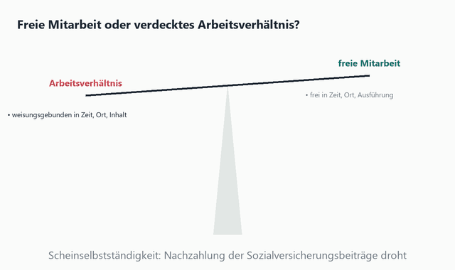
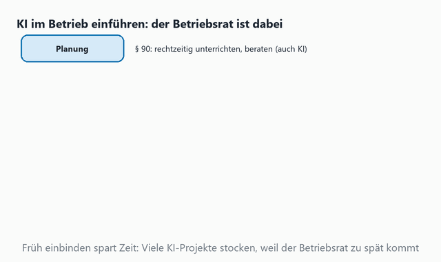

Arbeits- und Betriebsverfassungsrecht: Arbeitsverhältnisse gestalten, KI mit dem Betriebsrat einführen
Wer Teams aufbaut und KI einführt, bewegt sich im Arbeitsrecht: Welche Vertragsform passt, welche Rechte und Pflichten gelten, wie endet ein Arbeitsverhältnis rechtssicher? Und vor allem: Fast jede KI-Software im Betrieb berührt Mitbestimmungsrechte des Betriebsrats. In diesem Modul lernen Sie die Grundlagen des Individual- und Kollektivarbeitsrechts und wie Veränderungsprozesse mit KI rechtssicher gestaltet werden.
15 Lektionen in 3 Teilen6 Animationen1 Rechner12 Übungen mit Antwortfeldern20 QuizfragenRechtsvorschrift § 6, § 8 Nr. 3
Im Alltag – vertrautes Bild als Einstieg
Fachlich – genaue Erklärung
Prüfungstipp – so wird es abgefragt
Falle – hier verlieren viele Punkte
Rechtsstand: November 2026 (Mindestlohn 13,90 €, Minijob-Grenze 603 € im Monat). Werte und Gesetze ändern sich – vor der Prüfung den aktuellen Stand prüfen.
Lektion 1 · 20 Minuten
Arbeitsrecht im Überblick: Individual- und Kollektivarbeitsrecht
Individualarbeitsrecht
Kollektivarbeitsrecht
regelt
Beziehung zwischen Arbeitgeber und einzelnem Arbeitnehmer
Beziehungen zwischen Arbeitgeber(verbänden) und Belegschaftsvertretungen bzw. Gewerkschaften
Rangfolge: Gesetz → Tarifvertrag → Betriebsvereinbarung → Arbeitsvertrag → Weisung. Grundsätzlich gilt das Günstigkeitsprinzip: Die rangniedrigere Regel darf zugunsten der Beschäftigten abweichen. Arbeitnehmer ist, wer im Dienst eines anderen weisungsgebunden und fremdbestimmt in persönlicher Abhängigkeit arbeitet (§ 611a BGB).
Merksatz
Individualarbeitsrecht: Arbeitgeber und Einzelne. Kollektivarbeitsrecht: Betriebsrat, Gewerkschaften, Tarif und Betriebsvereinbarung.
Lektion 2 · 25 Minuten
Arbeitsvertrag, Nachweisgesetz, Probezeit
Abschluss: grundsätzlich formfrei (auch mündlich). Die Befristung braucht aber die Schriftform (§ 14 Abs. 4 TzBfG), sonst gilt der Vertrag als unbefristet.
Nachweisgesetz: Der Arbeitgeber muss die wesentlichen Bedingungen schriftlich mitteilen (Parteien, Beginn, Ort, Tätigkeit, Entgelt, Arbeitszeit, Urlaub, Kündigungsfristen usw.), teils schon am ersten Arbeitstag. Seit 2025 ist auch die Textform möglich, wenn der Beschäftigte das Dokument speichern und ausdrucken kann (Ausnahmen in bestimmten Branchen).
Probezeit: höchstens 6 Monate; Kündigungsfrist 2 Wochen. Nach 6 Monaten greift in Betrieben mit mehr als 10 Beschäftigten der Kündigungsschutz.
Typische Klauseln: Tätigkeit und Versetzung, Vergütung und Überstunden, Arbeitszeit und mobiles Arbeiten, Verschwiegenheit, Nebentätigkeit, Rechte an Arbeitsergebnissen (Software, Modelle, Erfindungen nach Arbeitnehmererfindungsgesetz).
Arten von Arbeitsverhältnissen: unbefristet, befristet, Teilzeit, Minijob
Form
Regeln
unbefristet, Vollzeit
Normalfall
befristet mit Sachgrund (§ 14 Abs. 1 TzBfG)
z. B. Vertretung, Projekt mit vorübergehendem Bedarf, Erprobung
befristet ohne Sachgrund (§ 14 Abs. 2)
höchstens 2 Jahre, bis zu dreimal verlängerbar, nur bei Neueinstellung (keine Vorbeschäftigung beim selben Arbeitgeber); in den ersten 4 Jahren nach Gründung bis 4 Jahre
Teilzeit (TzBfG)
Anspruch auf Verringerung bei mehr als 15 Beschäftigten und mehr als 6 Monaten; Brückenteilzeit (befristet 1–5 Jahre) bei mehr als 45 Beschäftigten; keine Benachteiligung
Minijob
Verdienstgrenze an den Mindestlohn gekoppelt: 2026 603 € im Monat (Mindestlohn 13,90 €); volle Arbeitnehmerrechte (Urlaub, Entgeltfortzahlung)
Merksatz
Ohne Sachgrund: maximal 2 Jahre, drei Verlängerungen, nur Neueinstellung, schriftlich vor Beginn.
Falle
Wer jemanden nach dem Studium ohne Sachgrund befristen will, der schon als Werkstudent im Unternehmen war, scheitert meist am Vorbeschäftigungsverbot.
Lektion 4 · 30 Minuten
Leiharbeit, freie Mitarbeit und Scheinselbstständigkeit

Das Gesamtbild entscheidet.
Leiharbeit (AÜG)
Ein Verleiher mit Erlaubnis überlässt Beschäftigte an einen Entleiher. Höchstüberlassungsdauer grundsätzlich 18 Monate, Gleichstellung beim Entgelt (Equal Pay) grundsätzlich nach 9 Monaten, Kennzeichnung im Vertrag.
Freie Mitarbeit
Selbstständige arbeiten auf Dienst- oder Werkvertragsbasis, frei in Zeit, Ort und Ausführung. Ist die Person in Wahrheit weisungsgebunden und eingegliedert, liegt Scheinselbstständigkeit vor: Sozialversicherungsbeiträge sind nachzuzahlen, ggf. Bußgelder und Strafbarkeit. Klärung über das Statusfeststellungsverfahren der Deutschen Rentenversicherung (§ 7a SGB IV).
Merksatz
Nicht der Vertragstitel, sondern die tatsächliche Durchführung entscheidet: Weisungen und Eingliederung sprechen für ein Arbeitsverhältnis.
Lektion 5 · 25 Minuten
Pflichten der Arbeitnehmer und der Arbeitgeber
Arbeitnehmer
Arbeitgeber
Arbeitspflicht: persönlich, nach Weisung (§ 106 GewO: Inhalt, Ort, Zeit nach billigem Ermessen)
Vergütungspflicht (mindestens Mindestlohn)
Treuepflicht: Verschwiegenheit über Geschäftsgeheimnisse, kein Wettbewerb während des Arbeitsverhältnisses, Schäden abwenden
Beschäftigungspflicht
Pflicht zur Rücksichtnahme, z. B. freigegebene KI-Werkzeuge nutzen, keine vertraulichen Daten in öffentliche KI-Dienste
Fürsorgepflicht: Arbeitsschutz, Schutz der Persönlichkeitsrechte und Daten, Gleichbehandlung (AGG), Weiterbildung bei neuen Systemen
Haftung der Beschäftigten nach den Grundsätzen des innerbetrieblichen Schadensausgleichs: bei leichter Fahrlässigkeit keine Haftung, bei mittlerer anteilig, bei grober Fahrlässigkeit und Vorsatz in der Regel voll.
Merksatz
Arbeitnehmer schulden Arbeit und Loyalität, Arbeitgeber Lohn, Beschäftigung und Fürsorge.
werktäglich 8 Stunden, bis 10 Stunden bei Ausgleich auf 8 Stunden im Schnitt (6 Monate); Ruhezeit 11 Stunden; Pausen 30 Minuten bei mehr als 6, 45 Minuten bei mehr als 9 Stunden; Arbeitszeit ist zu erfassen
Urlaub (BUrlG)
mindestens 24 Werktage bei 6-Tage-Woche = 20 Arbeitstage bei 5-Tage-Woche; voller Anspruch nach 6 Monaten Wartezeit
Entgeltfortzahlung (EFZG)
bei Krankheit bis 6 Wochen, nach 4 Wochen Beschäftigung
Mindestlohn (MiLoG)
2026: 13,90 € je Stunde, 2027: 14,60 €
Rechner: gesetzlicher Mindesturlaub und Minijob-Stunden
Merksatz
8 (bis 10) Stunden am Tag, 11 Stunden Ruhe, 20 Urlaubstage bei 5-Tage-Woche, 6 Wochen Entgeltfortzahlung.
Lektion 7 · 25 Minuten
Mobiles Arbeiten und Arbeitsschutz
Mobiles Arbeiten und Telearbeit
Telearbeit ist ein vom Arbeitgeber eingerichteter fester Bildschirmarbeitsplatz zu Hause (Arbeitsstättenverordnung). Mobiles Arbeiten ist ortsflexibel. Einen allgemeinen gesetzlichen Anspruch gibt es nicht; Regelung im Vertrag oder in einer Betriebsvereinbarung. Die Ausgestaltung mobiler Arbeit ist mitbestimmungspflichtig (§ 87 Abs. 1 Nr. 14 BetrVG).
Arbeitsschutz
Arbeitsschutzgesetz: Gefährdungsbeurteilung – auch für psychische Belastungen (Arbeitsverdichtung, ständige Erreichbarkeit, Überwachung durch Kennzahlen), Unterweisung, Maßnahmen. KI kann entlasten, aber auch Taktung und Kontrolle erhöhen.
Merksatz
Auch zu Hause gelten Arbeitszeit, Arbeitsschutz und Datenschutz; Gefährdungsbeurteilung schließt psychische Belastung ein.
mit Frist (§ 622 BGB), bei KSchG sozial gerechtfertigt
außerordentliche (fristlose) Kündigung
wichtiger Grund (§ 626 BGB), z. B. Diebstahl, schwere Beleidigung; nur innerhalb von 2 Wochen ab Kenntnis; oft vorher Abmahnung nötig
Aufhebungsvertrag
einvernehmlich, schriftlich (§ 623 BGB); kein Betriebsrat-Anhörungsrecht; Sperrzeit beim Arbeitslosengeld möglich
Befristungsende
endet automatisch, wenn die Befristung wirksam war
Merksatz
Kündigung und Aufhebungsvertrag immer schriftlich mit Originalunterschrift – E-Mail oder Messenger reichen nicht.
Falle
Eine Abmahnung muss das Fehlverhalten konkret benennen und für den Wiederholungsfall arbeitsrechtliche Konsequenzen androhen – pauschale Ermahnungen reichen nicht.
Lektion 9 · 35 Minuten
Kündigungsfristen und Kündigungsschutzgesetz
Verlängerte Fristen gelten für den Arbeitgeber.Prüfschema Kündigungsschutz.
Soziale Rechtfertigung (§ 1 KSchG): personenbedingt (z. B. lang andauernde Krankheit mit negativer Prognose), verhaltensbedingt (Pflichtverstoß, meist nach Abmahnung), betriebsbedingt (Arbeitsplatz fällt durch unternehmerische Entscheidung weg, keine Weiterbeschäftigung möglich, Sozialauswahl nach Betriebszugehörigkeit, Alter, Unterhaltspflichten, Schwerbehinderung). Sonderkündigungsschutz: Schwangere und Elternzeit, schwerbehinderte Menschen (Zustimmung des Integrationsamts), Betriebsratsmitglieder.
KI und Kündigung: Fällt ein Arbeitsplatz durch KI weg, ist eine betriebsbedingte Kündigung möglich – aber erst nach Prüfung freier Arbeitsplätze, auch nach zumutbarer Umschulung, und mit Sozialauswahl.
Merksatz
KSchG ab mehr als 10 Beschäftigten und 6 Monaten; Kündigung braucht einen personen-, verhaltens- oder betriebsbedingten Grund; Klage binnen 3 Wochen.
Prüfungstipp
„Mitarbeiterin seit 9 Jahren im Betrieb“ → Frist des Arbeitgebers 3 Monate zum Monatsende.
Lektion 10 · 20 Minuten
Zeugnis und Pflichten nach dem Ende
Arbeitszeugnis (§ 109 GewO)
Anspruch auf ein einfaches (Art und Dauer) oder auf Verlangen qualifiziertes Zeugnis (zusätzlich Leistung und Verhalten). Es muss wahr und wohlwollend sein, klar formuliert, ohne versteckte Botschaften. Elektronische Form nur mit Einwilligung.
Nach dem Ende
Herausgabe von Arbeitsmitteln und Daten, Löschung von Zugängen, Verschwiegenheit über Geschäftsgeheimnisse; ein nachvertragliches Wettbewerbsverbot gilt nur, wenn schriftlich vereinbart, höchstens 2 Jahre und mit Karenzentschädigung von mindestens der Hälfte der letzten Bezüge.
Merksatz
Zeugnis: wahr und wohlwollend. Wettbewerbsverbot nach dem Ende nur mit Entschädigung.
Errichtung: in Betrieben mit mindestens 5 ständigen wahlberechtigten Arbeitnehmern, von denen 3 wählbar sind. Regelmäßige Wahlen alle 4 Jahre (zuletzt 2026). Größe nach Belegschaft.
Aufgaben (§ 80): Einhaltung von Gesetzen, Tarifen und Betriebsvereinbarungen überwachen, Gleichstellung und Beschäftigungssicherung fördern, Anregungen einbringen. Der Arbeitgeber muss rechtzeitig und umfassend informieren.
Gestaltung von Arbeitsplatz und Ablauf (§§ 90, 91)
Planung neuer Technik, auch KI
Unterrichtung, Beratung
Merksatz
Bei echter Mitbestimmung (§ 87) darf der Arbeitgeber ohne Einigung nicht handeln – sonst entscheidet die Einigungsstelle.
Falle
Eine Kündigung ohne vorherige Anhörung des Betriebsrats ist unwirksam (§ 102), selbst wenn sie sonst berechtigt wäre.
Lektion 13 · 35 Minuten
KI im Betrieb und Betriebsrat: §§ 80, 87, 90, 95 BetrVG

Früh einbinden spart Zeit.
Norm
Inhalt
§ 90 Abs. 1 Nr. 3
rechtzeitige Unterrichtung über die Planung von Arbeitsverfahren und -abläufen einschließlich des Einsatzes von KI, Beratung über Auswirkungen
§ 80 Abs. 3
muss der Betriebsrat die Einführung oder Anwendung von KI beurteilen, gilt die Hinzuziehung eines Sachverständigen als erforderlich (Kosten trägt der Arbeitgeber)
§ 87 Abs. 1 Nr. 6
Mitbestimmung bei technischen Einrichtungen, die geeignet sind, Verhalten oder Leistung zu überwachen – praktisch fast jede Software mit Nutzerdaten, auch KI-Assistenten
§ 95 Abs. 2a
Auswahlrichtlinien (Einstellung, Versetzung, Kündigung) sind auch dann zustimmungspflichtig, wenn sie mithilfe von KI aufgestellt oder angewendet werden
§ 87 Abs. 1 Nr. 7, § 91
Gesundheitsschutz, Belastungen durch neue Arbeitsweisen
Zusätzlich: Pflichten aus der KI-Verordnung (Betreiber von Hochrisiko-KI informieren die Beschäftigtenvertretung vor dem Einsatz am Arbeitsplatz) und aus dem Datenschutz (Rechtsgrundlage für Beschäftigtendaten, ggf. die Betriebsvereinbarung selbst nach Art. 88 DSGVO).
Merksatz
KI im Betrieb = Unterrichtung (§ 90), Sachverständiger (§ 80 Abs. 3), Mitbestimmung bei Überwachungseignung (§ 87 Abs. 1 Nr. 6) und bei Auswahlrichtlinien (§ 95 Abs. 2a).
Prüfungstipp
„KI-Tool wertet Bearbeitungszeiten je Mitarbeitendem aus“ → § 87 Abs. 1 Nr. 6 (Mitbestimmung), § 90 (Unterrichtung), ggf. § 80 Abs. 3; Einführung erst nach Einigung bzw. Spruch der Einigungsstelle.
Lektion 14 · 30 Minuten
Betriebsvereinbarung zur KI-Einführung
Regelungspunkt
Beispiel
Geltungsbereich, Systeme
freigegebene KI-Werkzeuge, Rahmen-BV mit Anlagen je System
Zwecke und Verbote
Unterstützung der Arbeit; keine Leistungs- und Verhaltenskontrolle einzelner Beschäftigter
Daten
welche Daten, Speicherdauer, Zugriffsrechte, Anonymisierung von Auswertungen
Auswertungen
nur aggregiert ab einer Mindestgruppengröße, Verbot personenbezogener Rankings
Menschliche Entscheidung
keine personellen Maßnahmen allein auf Basis von KI-Ergebnissen
Qualifizierung
Schulungsanspruch, KI-Kompetenz, Lernzeit
Beschäftigungssicherung
Umschulung vor Kündigung, Regelungen bei Wegfall von Aufgaben
Evaluation, Änderungen
Prüfung nach 12 Monaten, Verfahren für neue Funktionen, KI-Ausschuss, Kontrolle durch den Betriebsrat
Merksatz
Eine gute KI-Betriebsvereinbarung regelt Zwecke, Daten, Auswertungen, menschliche Entscheidung, Qualifizierung, Beschäftigungssicherung und Evaluation.
Eine Betriebsänderung (§ 111 BetrVG, Unternehmen mit mehr als 20 wahlberechtigten Arbeitnehmern) liegt u. a. vor bei Einschränkung oder Stilllegung, Zusammenschluss, grundlegender Änderung der Organisation oder der Betriebsanlagen und bei Einführung grundlegend neuer Arbeitsmethoden und Fertigungsverfahren – dazu kann eine umfassende KI-Einführung gehören.
Interessenausgleich: ob, wann und wie die Änderung durchgeführt wird; verhandelbar, nicht erzwingbar – aber ohne ernsthaften Versuch drohen Nachteilsausgleichsansprüche (§ 113).
Sozialplan: Ausgleich oder Milderung wirtschaftlicher Nachteile (Abfindungen, Qualifizierung, Transfergesellschaft); bei Personalabbau ab bestimmten Schwellen erzwingbar über die Einigungsstelle.
Früh planen und den Betriebsrat unterrichten (§§ 90, 111)
Auswirkungen auf Aufgaben, Qualifikationen und Stellen analysieren
Qualifizierungs- und Umsetzungskonzept entwickeln (Beschäftigungssicherung)
Betriebsvereinbarung, ggf. Interessenausgleich und Sozialplan verhandeln
Umsetzen, kommunizieren, evaluieren (Change Management, Modul 10)
Merksatz
Große KI-Einführungen können Betriebsänderungen sein: Interessenausgleich versuchen, Sozialplan verhandeln, Qualifizierung vor Abbau.
Übungen · 110 Minuten
Übungen mit Musterlösung
Tragen Sie Ihre Antworten in die Felder ein. Der Rechner in Lektion 6 hilft bei Aufgabe 4.
Aufgabe 1: Kündigungsfrist
2 Punkte
Eine Mitarbeiterin ist seit 9 Jahren im Betrieb. Die Kündigung des Arbeitgebers geht ihr am 20. März zu. a) Welche Frist gilt? b) Zu welchem Tag endet das Arbeitsverhältnis frühestens?
Lösung anzeigen
a) 3 Monate zum Monatsende (1 P.) · b) 30. Juni (1 P.).
Aufgabe 2: Gilt das Kündigungsschutzgesetz?
3 Punkte
1. Betrieb mit 8 Beschäftigten, Mitarbeiter seit 2 Jahren. 2. Betrieb mit 50 Beschäftigten, Mitarbeiterin seit 4 Monaten. 3. Betrieb mit 50 Beschäftigten, Mitarbeiter seit 3 Jahren.
Lösung anzeigen
1. nein (nicht mehr als 10 Beschäftigte) · 2. nein (Wartezeit 6 Monate nicht erfüllt) · 3. ja. Je 1 Punkt.
Aufgabe 3: Befristung ohne Sachgrund
4 Punkte
Zulässig? 1. Neueinstellung, 18 Monate, innerhalb der Laufzeit zweimal verlängert. 2. Neueinstellung, befristet auf 26 Monate. 3. Ein früherer Werkstudent des Unternehmens wird nach dem Studium sachgrundlos befristet eingestellt. 4. Die Befristung wurde nur per E-Mail vereinbart.
Lösung anzeigen
1. zulässig · 2. unzulässig (mehr als 2 Jahre) · 3. in der Regel unzulässig (Vorbeschäftigung) · 4. unwirksam (Schriftform fehlt) – das Arbeitsverhältnis gilt als unbefristet. Je 1 Punkt.
Aufgabe 4: Urlaub und Minijob
2 Punkte
a) Wie viele Tage gesetzlichen Mindesturlaub hat eine Teilzeitkraft mit 3 Arbeitstagen pro Woche? b) Wie viele Stunden im Monat darf eine Minijobberin 2026 zum Mindestlohn von 13,90 € höchstens arbeiten (Grenze 603 €, auf eine Nachkommastelle)?
Lösung anzeigen
a) 24 / 6 × 3 = 12 Tage (1 P.) · b) 603 / 13,90 ≈ 43,4 Stunden (1 P.).
Aufgabe 5: Scheinselbstständigkeit
3 Punkte
Ein „freier“ Data Scientist arbeitet seit einem Jahr ausschließlich für ein Unternehmen, täglich von 9 bis 17 Uhr im Büro, mit Firmenlaptop, nimmt an Teambesprechungen teil und erhält Aufgaben von der Teamleitung. Beurteilen Sie den Fall.
Lösung anzeigen
Merkmale eines Arbeitsverhältnisses: Weisungsgebundenheit in Zeit, Ort und Inhalt; Eingliederung (Team, Besprechungen, Arbeitsmittel); nur ein Auftraggeber, kein Unternehmerrisiko (2 P.). Wahrscheinlich Scheinselbstständigkeit: Nachzahlung der Sozialversicherungsbeiträge droht; Statusfeststellungsverfahren, Vertragsgestaltung ändern oder Anstellung (1 P.).
Aufgabe 6: Arbeitszeit
3 Punkte
Zulässig nach ArbZG? 1. Dauerhaft 10 Stunden je Werktag ohne Ausgleich. 2. Arbeitsende 23 Uhr, Arbeitsbeginn am nächsten Tag 8 Uhr. 3. 7 Stunden Arbeit ohne Pause.
Lösung anzeigen
1. unzulässig (Ausgleich auf durchschnittlich 8 Stunden fehlt) · 2. unzulässig (nur 9 Stunden Ruhezeit) · 3. unzulässig (mindestens 30 Minuten Pause bei mehr als 6 Stunden). Je 1 Punkt.
Aufgabe 7: Beteiligungsrechte
4 Punkte
Welches Recht hat der Betriebsrat? 1. Einführung eines KI-Tools, das Bearbeitungszeiten je Mitarbeitendem auswertet. 2. Ordentliche Kündigung eines Mitarbeiters. 3. Einstellung einer Data Scientist. 4. Frühe Planung einer neuen KI-Anwendung in der Sachbearbeitung.
Lösung anzeigen
1. Mitbestimmung (§ 87 Abs. 1 Nr. 6) · 2. Anhörung (§ 102) · 3. Zustimmungsverweigerungsrecht (§ 99) · 4. Unterrichtung und Beratung (§ 90). Je 1 Punkt.
Aufgabe 8: KI-Betriebsvereinbarung
4 Punkte
Nennen Sie vier Regelungspunkte einer Betriebsvereinbarung zur Einführung eines KI-Assistenten in der Sachbearbeitung.
Lösung anzeigen
Zum Beispiel: Zwecke und Verbot der individuellen Leistungskontrolle; verarbeitete Daten, Speicherdauer, Zugriffsrechte; nur aggregierte Auswertungen; keine personellen Maßnahmen allein auf KI-Basis; Qualifizierung und Lernzeit; Beschäftigungssicherung; Evaluation und Verfahren für neue Funktionen. Je Punkt 1 Punkt.
Aufgabe 9: Beendigung
3 Punkte
a) Innerhalb welcher Frist muss eine außerordentliche Kündigung ab Kenntnis des Grundes erklärt werden? b) Welche Form braucht ein Aufhebungsvertrag? c) Innerhalb welcher Frist muss ein Arbeitnehmer Kündigungsschutzklage erheben?
Lösung anzeigen
a) 2 Wochen · b) Schriftform mit Originalunterschrift · c) 3 Wochen nach Zugang. Je 1 Punkt.
Aufgabe 10: Betriebsänderung
3 Punkte
Ein Versicherer mit 600 Beschäftigten führt KI in der gesamten Schadenbearbeitung ein; Arbeitsweisen ändern sich grundlegend, Stellen sollen wegfallen. Welche Instrumente sieht das Betriebsverfassungsgesetz vor, und was unterscheidet sie?
Lösung anzeigen
Betriebsänderung nach § 111 (grundlegend neue Arbeitsmethoden, ggf. Personalabbau) (1 P.). Interessenausgleich: ob, wann, wie – muss ernsthaft versucht werden, ist aber nicht erzwingbar (1 P.). Sozialplan: Ausgleich wirtschaftlicher Nachteile (Abfindung, Qualifizierung) – über die Einigungsstelle erzwingbar (1 P.).
Aufgabe 11: Arbeitszeugnis
2 Punkte
a) Worauf hat eine Beschäftigte auf Verlangen Anspruch: einfaches oder qualifiziertes Zeugnis? b) Welche beiden Grundsätze muss ein Zeugnis erfüllen?
Lösung anzeigen
a) qualifiziertes Zeugnis mit Leistung und Verhalten (1 P.) · b) wahr und wohlwollend (1 P.).
Aufgabe 12: Situationsaufgabe KI-Einführung mit Betriebsrat
8 Punkte
Die Muster Logistik GmbH (350 Beschäftigte, Betriebsrat) will einen KI-Assistenten für die Disposition einführen. Er schlägt Touren vor, protokolliert alle Eingaben und kann auswerten, wie oft Disponenten seinen Vorschlägen folgen. Zwei befristete Projektstellen sollen geschaffen werden; langfristig sollen zwei Disponentenstellen entfallen. Beschreiben Sie ein rechtssicheres Vorgehen.
Lösung anzeigen
Betriebsrat (3 P.): frühe Unterrichtung und Beratung (§ 90), Sachverständiger (§ 80 Abs. 3), Mitbestimmung wegen Überwachungseignung (§ 87 Abs. 1 Nr. 6) – Einführung erst nach Einigung, Betriebsvereinbarung (Zwecke, keine individuelle Leistungskontrolle, nur aggregierte Auswertungen, Speicherfristen, Qualifizierung, Evaluation). Personal (2 P.): Projektstellen befristet mit Sachgrund (vorübergehender Projektbedarf) oder sachgrundlos bei Neueinstellung bis 2 Jahre, schriftlich; Einstellung mit Zustimmung nach § 99. Stellenabbau (2 P.): vorrangig Umsetzung und Qualifizierung; sonst betriebsbedingte Kündigung mit Sozialauswahl, Anhörung (§ 102), Fristen nach § 622; prüfen, ob eine Betriebsänderung vorliegt (Interessenausgleich, Sozialplan). Weitere Regeln (1 P.): Datenschutz (Rechtsgrundlage, Information, ggf. DSFA), Arbeitsschutz (psychische Belastung), KI-Kompetenz.
Abschlussquiz · 25 Minuten
Abschlussquiz Modul 16
20 Fragen im Stil der schriftlichen Prüfung, jeweils eine richtige Antwort. Ab 14 richtigen Antworten (70 %) sind Sie gut vorbereitet.
0 / 20
Zusammenfassung
Das Wichtigste auf einen Blick
Überblick
Individual- und Kollektivarbeitsrecht; Günstigkeitsprinzip.